ಸಿದ್ದೇಶ್ವರ ಯುವಕರ ಪ್ರವಾಸ ಬಳಗ(ರೀ)
ಕೋಟೀಹಾಳ
ಹಾಲು ಕುಡಿರಿ, ಬೈಕ್ ಹೊಡಿರಿ : By Ummi Bike Riders
Davangere → Sirsi → Yana → Gokarna → Honnavar → Apsarakonda → Murudeshwara → Kolluru → Kundapura → Maravanthe → Malpe → Udupi → Kateel → Agumbe → Karkala → Dharmasthala → Davangere
Trip Registration Form
Trip Details
Route
17 Stops | Full Karnataka Circuit
Duration
2 Days 3 Nights / Bike Trip
Distance
~900 km Round Trip
Highlights
Beaches, Temples, Ghats, Waterfalls
About This Bike Trip
An epic motorcycle circuit through Karnataka—Western Ghats, Arabian Sea coast, temple towns & pristine beaches. From Davangere, ride to Sirsi & Yana's limestone caves, hit Gokarna & Honnavar beaches, Apsarakonda waterfall, Murudeshwara temple, Kolluru Mookambika, Kundapura, Maravanthe's unique sea-river stretch, Malpe & Udupi, Kateel temple, Agumbe sunset point, Karkala's Bahubali statue, Dharmasthala, and back to Davangere.
Coordinators
Route Plan
2 Days 3 Nights | Departure: 5:00 AM from Davangere (Early Morning)
Day 1 Davangere → Sirsi → Yana → Gokarna → Honnavar → Murudeshwara (~400 km)
5:00 AM Departure from Davangere
7:30 AM Tiffin Break — Sirsi (Tea, snacks, light breakfast)
9:00 AM Yana caves, Gokarna beaches
1:00 PM Lunch Break — Gokarna / Honnavar (Coastal cuisine)
3:00 PM Apsarakonda waterfall
7:30 PM Dinner Break — Murudeshwara (Local dinner)
9:00 PM Stay — Murudeshwara (Beach-side hotels / lodges)
Day 2 Murudeshwara → Kolluru → Kundapura → Maravanthe → Malpe → Udupi → Kateel → Agumbe → Karkala → Dharmasthala → Davangere (~450 km)
5:30 AM Departure from Murudeshwara
8:00 AM Tiffin Break — Kolluru (Tea, idli, vada)
9:30 AM Maravanthe Beach, Malpe, Udupi
1:00 PM Lunch Break — Udupi (Famous Udupi meals)
2:30 PM Kateel temple, Agumbe sunset point
5:30 PM Karkala, Dharmasthala
7:30 PM Dinner Break — En route / Dharmasthala
10:00 PM Arrival — Davangere (Stay at home)
Biker Tips
- Start at 5:00 AM sharp; cool morning ride, less traffic.
- Carry a Sunscreen
- Hand Gloves
- Head Cap
- Sunglasses
Route Highlights
Key stops on the ಸಿದ್ದೇಶ್ವರ ಯುವಕರ ಪ್ರವಾಸ ಬಳಗ(ರೀ)
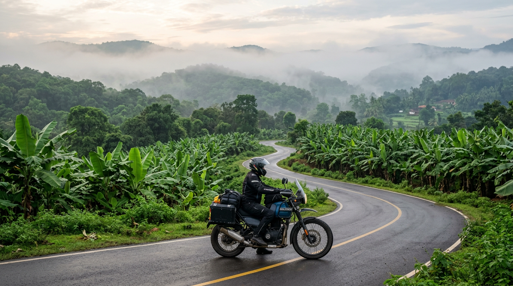
Sirsi
Lush green town in Western Ghats, banana plantations, Marikamba Temple. Gateway to Yana & Gokarna.
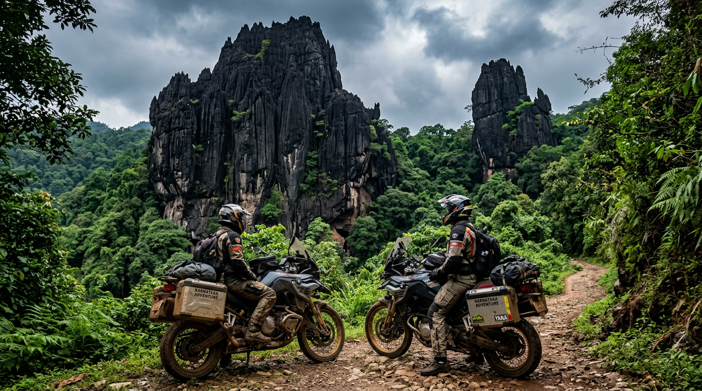
Yana
Dramatic black limestone formations—Bhairaveshwara & Mohini Shikhara. Cave temple, lush forest trek.
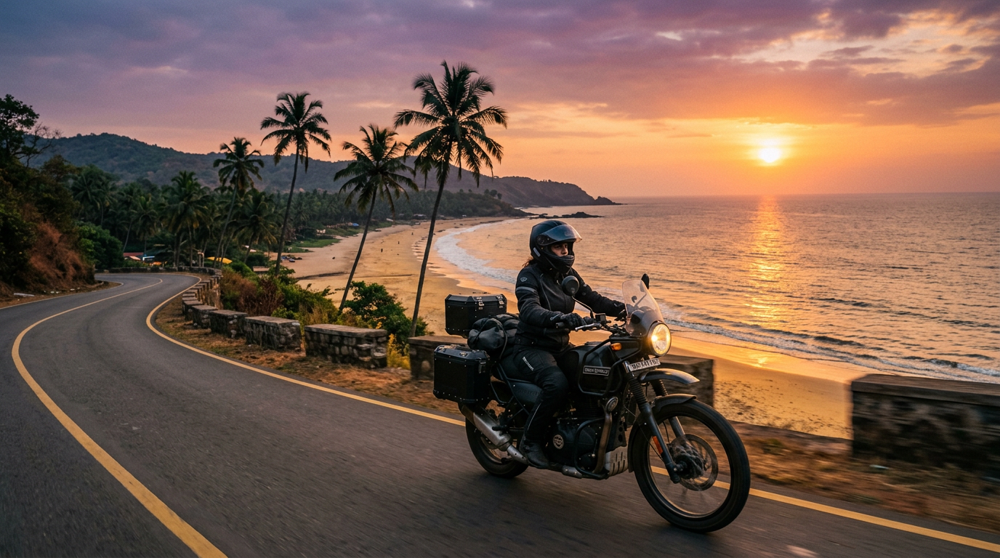
Gokarna
Famous beaches—Om, Kudle, Paradise. Temple town meets backpacker vibe. Sunset rides by the Arabian Sea.
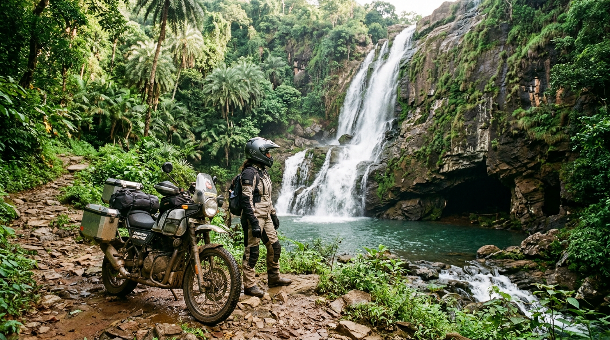
Apsarakonda Beach
Waterfall meeting hidden caves near Honnavar. Cascading waters, lush greenery. Quick stop before Murudeshwara.
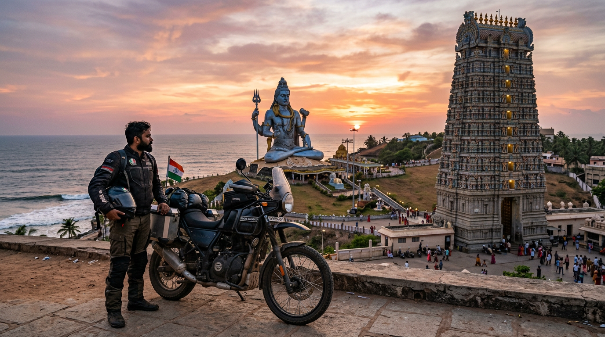
Murudeshwara
Iconic 123-ft Shiva statue, beach temple, gopuram. Coastal spiritual landmark on NH66.
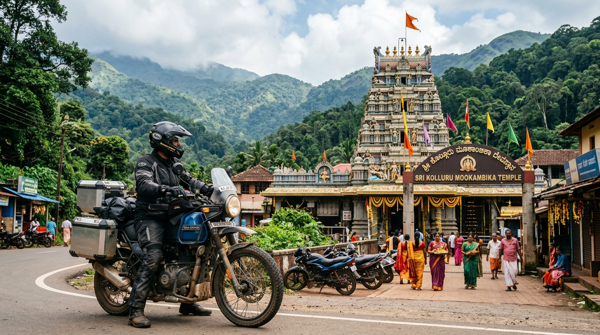
Kolluru
Mookambika Temple in Western Ghats. Sacred pilgrimage, scenic hill ride.
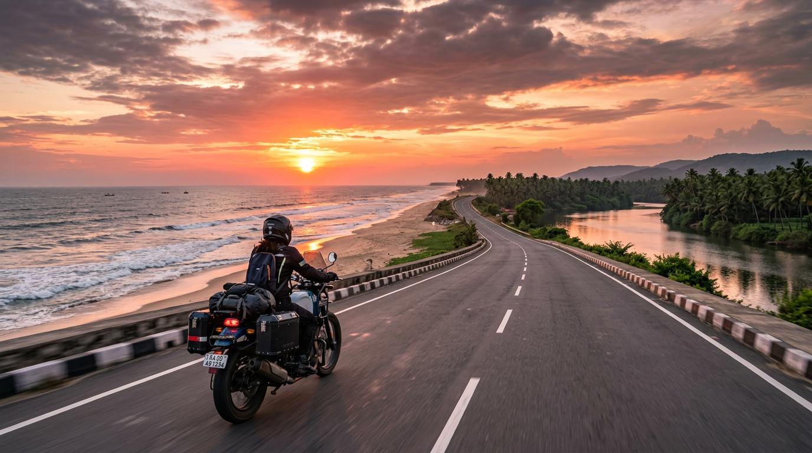
Maravanthe Beach
Unique: NH66 runs between Arabian Sea & Souparnika River. Must-ride coastal stretch.
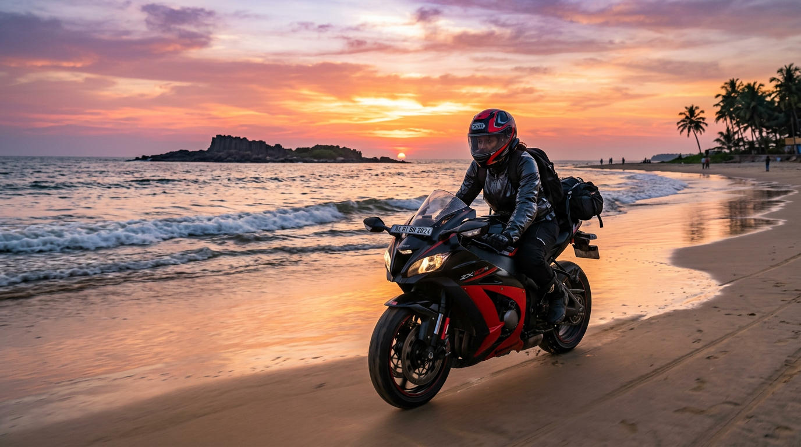
Malpe & Udupi
Malpe Beach, St. Mary's Island ferry. Udupi Sri Krishna Temple. Coastal heritage & beaches.
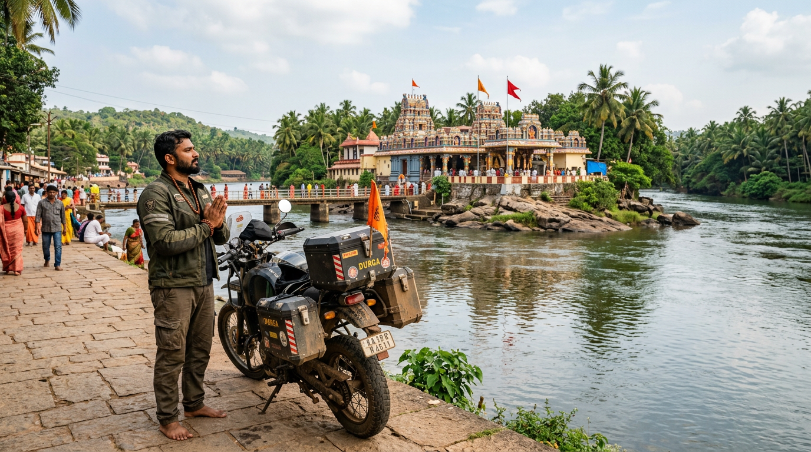
Kateelu
Kateel Durga Parameshwari Temple on Nandini river island. Spiritual stop on the circuit.
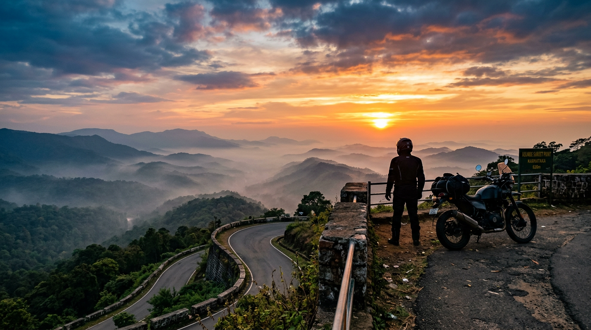
Agumbe
Sunset point—Cherrapunji of South. Misty ghats, rainforest. Iconic bike ride.
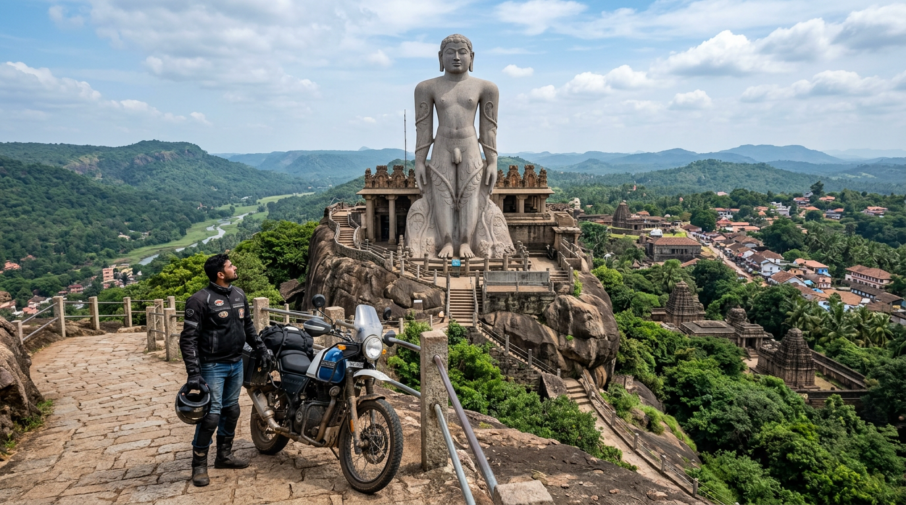
Karkala
Bahubali Gommateshwara monolithic statue. Jain heritage, hill town views.
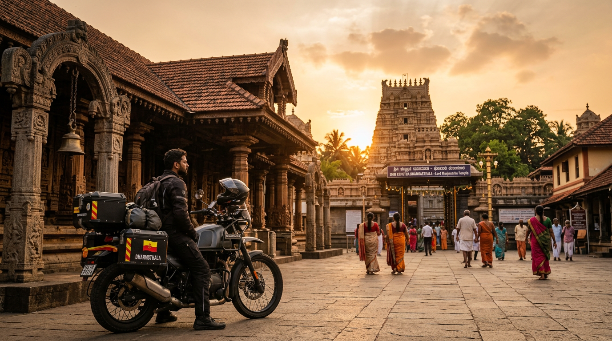
Dharmasthala
Famous temple town. Manjunatha Temple, scenic Western Ghats ride before heading back.
Trip Route Map
Full circuit: Davangere → Sirsi → Yana → Gokarna → Honnavar → Apsarakonda → Murudeshwara → Kolluru → Kundapura → Maravanthe → Malpe → Udupi → Kateel → Agumbe → Karkala → Dharmasthala → Davangere